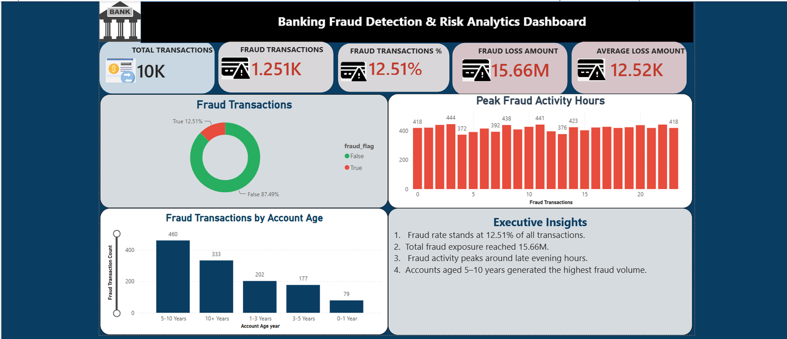
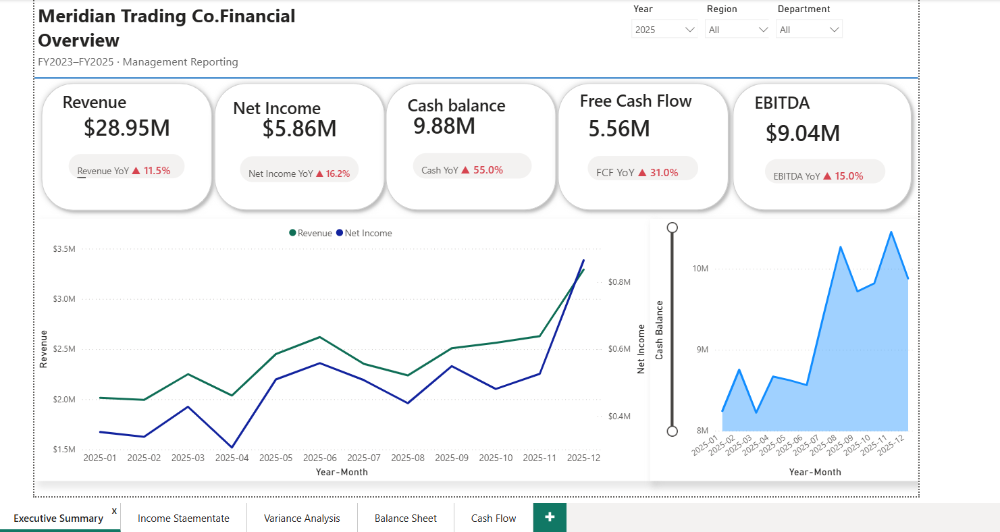

Shahzaib Ahmad
Accountant | Financial Analyst | SOCPA Registered Member
Accounting & Finance Professional specializing in Financial Reporting, General Ledger, Financial Modeling, Power BI, SQL and Advanced Excel.
View My Projects
Accounting & Finance Professional specializing in Financial Reporting, General Ledger, Financial Modeling, Power BI, SQL and Advanced Excel.
View My Projects
I am an Accounting and Finance professional with practical experience in General Ledger, Accounts Payable, Accounts Receivable, Bank Reconciliation, Inventory Management, Financial Reporting and Financial Analysis. I hold a Bachelor of Business Administration in Accounting & Finance, Advanced Diploma in Public Accounting, Post Graduate Diploma in Public Accounting and I am a SOCPA Registered Member. I enjoy using Power BI, SQL and Microsoft Excel to transform financial data into meaningful business insights.
Riyadh, Saudi Arabia
October 2025 – March 2026
Riyadh, Saudi Arabia
January 2025 – July 2025

Developed an interactive Power BI dashboard to identify fraudulent banking transactions using KPIs, DAX measures, Power Query, trend analysis and interactive visualizations.
View Project
Built a professional financial dashboard using Power BI for revenue, expenses, profitability and management reporting with interactive charts.
View ProjectDeveloped a comprehensive three-statement financial model in Microsoft Excel including DCF Valuation, WACC, Forecasting, Financial Ratio Analysis, Sensitivity Analysis and Business Valuation.
Designed and queried a financial database using PostgreSQL. Created advanced SQL queries for revenue analysis, profitability reporting, customer analysis and business intelligence.
Accounting & Finance
ICPAP
ICPAP